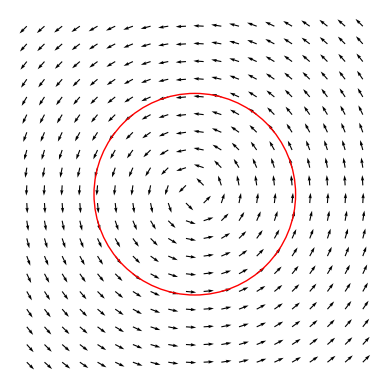

Introduction
During the current academic year I have been working on research pertaining to symmetries of PDEs. In this post I'd like to briefly explain the method, and then explain why the 'modern' method, utilizing the variational derivative, is computationally and conceptually clearer than the historical version (which is still often used).
Algebraic equations
To start, consider a circle. We can rotate and reflect a circle and it will look the same. How can we express this mathematically?
In the plane we can express a circle with radius \( r \) as the set of points satisfying the algebraic equation \( x^2 + y^2 = r \), a symmetry of the circle should leave this algebraic equation unchanged. A rotation \( R(\theta) \) in the plane is described by the linear transformation
\[ \begin{pmatrix} x' \\ y' \end{pmatrix} = \begin{pmatrix} \cos\theta & -\sin\theta \\ \sin\theta & \cos\theta \end{pmatrix} \begin{pmatrix} x \\ y \end{pmatrix} \]
and a reflection is described by
\[ \begin{pmatrix} x' \\ y' \end{pmatrix} = \begin{pmatrix} \cos\theta & \sin\theta \\ \sin\theta & -\cos\theta \end{pmatrix} \begin{pmatrix} x \\ y \end{pmatrix} \]
Let's check by substitution if rotation is indeed a symmetry:
\[ \begin{aligned} x'^2+y'^2 &=(x\cos\theta -y\sin\theta)^2+ (x \sin\theta + y\cos\theta)^2\\ &=x^2(\cos\theta^2+\sin\theta^2)+y^2(\sin\theta^2+\cos\theta^2)+xy(-\sin\theta\cos\theta+\sin\theta\cos\theta)\\ &= x^2+y^2 \end{aligned} \]
Next, we want to think about how a circle can be infinitesimally rotated, what does that even look like? The picture is we want each point to walk infinitesimally in the direction of its tangent vector. Mathematically this corresponds to the derivative of the rotation matrix evaluated at zero:
\[ \frac{d}{d\theta}\Bigr|_{\theta=0} \begin{pmatrix} \cos\theta & -\sin\theta \\ \sin\theta & \cos\theta \end{pmatrix} = \begin{pmatrix} 0 & -1 \\ 1 & 0 \end{pmatrix} \]
This transformation is called the infinitesimal generator of a rotation.
From this it is easy to see that \( x^2+y^2 \) remains invariant. An important thing to note here is that the expression for an infinitesimal rotation is simpler than that of a finite rotation.
Finally, we can represent an infinitesimal rotation as an action on functions, this will reduce the problem of finding symmetries to one of solving a PDE. First note that we can define a representation of \( G \) to act on functions by \( (\pi(g)f)(x) = f(g^{-1}x) \). So, an infinitesimal rotation acts on a function \( f(x,y) \) by \( f( \begin{pmatrix} 0 & -1 \\ 1 & 0 \end{pmatrix} \begin{pmatrix} x \\ y \end{pmatrix}) = f(y, -x) \). Since we want this transformation to be infinitesimal we compute the first order Taylor expansion of \( f(y, -x) \), this gives \( y\partial_x f - x\partial_y f \).
Therefore, we can conclude that an algebraic equation is rotationally symmetric if the rotational vector field vanishes on the equation.
